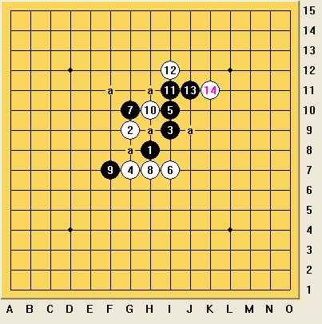

请教浦月的一个变化，在多个棋谱中也没能找到解答。
首页
五子棋交流
#1 请教浦月的一个变化，在多个棋谱中也没能找到解答。 作者：夜之烟 发表时间：2012-10-18 22:50:09
14后，黑如何落子可以必胜？
#2 Re:请教浦月的一个变化，在多个棋谱中也没能找到解答。 作者：暴力连珠 发表时间：2012-10-18 22:55:17
且不说你前面走得怎么样，这个局面下这个15应该是胜了
#3 Re:请教浦月的一个变化，在多个棋谱中也没能找到解答。 作者：屏蔽 发表时间：2012-10-18 23:32:11

第一感J9
#4 Re:请教浦月的一个变化，在多个棋谱中也没能找到解答。 作者：踵酃 发表时间：2012-10-19 2:06:05
一般棋谱只会研究5手后的最容易胜的点
#5 Re:请教浦月的一个变化，在多个棋谱中也没能找到解答。 作者：裁决殿雪月 发表时间：2012-10-19 6:34:40
原来地毯谱还木有普及啊！！！
#6 Re:裁决殿雪月【==Re:请教浦月的一个变化，在多个棋谱中也没能找到解答。==】 作者：屏蔽 发表时间：2012-10-19 8:33:11
引用：
原文由 裁决殿雪月 发表于 2012-10-19 6:34:40 :
原来地毯谱还木有普及啊！！！
年底之前我给普及一下。